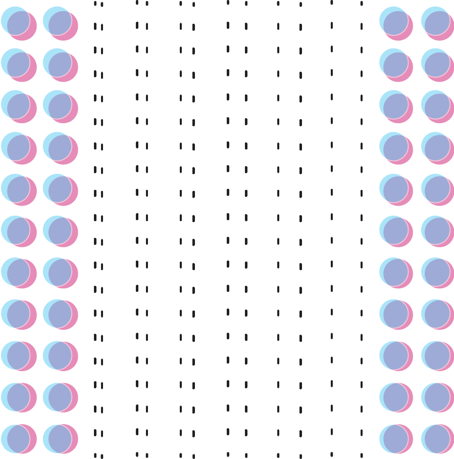

Welcome to
The first ever Protean Money
Overlay is a cryptocurrency that allows users to place bets on nearly
any streaming data.
It recreates the dynamics of trading,
but
without counterparties.
Thus it completely solves the liquidity problems which beset similar systems like cash-settled futures, exchange
and over-the-counter trading, and scalar prediction markets.
An overlay on the preexisting world

Step 1
Using an oracle, any Overlay coin (OVL) holder can query a set of streaming data sources, such as the USD/EUR exchange rate, the Consumer Confidence Index, the number of albums sold by an artist last month, and so forth.
Step 2
Any fraction of an OVL token can be locked to a single market price by opening a virtual trade, which is a buy or a sell of a market at whatever value the oracle yields for the data stream.

Step 3
At a later time, the owner of those OVL can unlock them. The value of the data stream will be queried again, the difference in value between unlocking and locking time will be computed as a percentage return.
Step 4
The original amount of locked OVL in the owner’s wallet will be increased or decreased by that percentage. OVL tokens are created and destroyed dynamically upon unlocking, and so a user’s net OVL worth depends on the quality of virtual trades that user makes.

The Overlay system emancipates the user from counterparties, and yet recreates the dynamics of trading itself.
A simple idea, with many rewards
No liquidity problems
Liquidity is a pain point in crypto and elsewhere. Overlay allows users to trade against a network, not a single counterparty.
Razor sharp fills
Because there are no counterparties, there is no price impact. Any OVL trade, of any amount, settles at a single price.
Trade non-markets
Global data sources and interest in monetizing data will continue to grow. Overlay allows pure data to be traded, creating financial instruments unavailable anywhere else.
Low, even negative fees
When the network is young, Overlay will pay users to trade. As the network matures, users pay a small fee (around .01% or even .005%) to trade.
Escape OVL volatility
Users have the option to take payouts in the equivalent of a fiat currency, rather than OVL. No matter what the OVL price does, the trade return is guaranteed.
The future of monetizing data
-

A mutable stablecoin
OVL can track USD, EUR, RMB, allowing for cross-border payments in the equivalent of the payee’s currency.
-
Network effects
The more users Overlay has, the more stable it becomes and the better it works.
-
So many new markets
Overlay will expand the financial world by many orders of magnitude.
Trajectory
Goal 1Secure funding The more users Overlay has, the more stable it becomes and the better it works. |
Goal 2Develop MVP of Overlay Market The more users Overlay has, the more stable it becomes and the better it works. |
Goal 3Test relentlessly The more users Overlay has, the more stable it becomes and the better it works. |
Goal 4Broadcast Overlay The more users Overlay has, the more stable it becomes and the better it works. |
Goal 5Broadcast Overlay The more users Overlay has, the more stable it becomes and the better it works. |
Goal 6Broadcast Overlay The more users Overlay has, the more stable it becomes and the better it works. |
Goal 7Broadcast Overlay The more users Overlay has, the more stable it becomes and the better it works. |